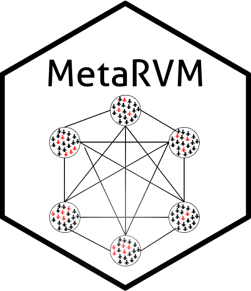

Metapopulation Measles Simulator (ODIN Core)
Source:R/metaODIN_measles.R
meta_measles_sim.RdCore ODIN-based simulation engine for a measles metapopulation model with
two exposed stages (E1, E2) and two infectious stages (I1, I2),
each split into quarantined (_Q) and unquarantined (_U) compartments.
Usage
meta_measles_sim(
N_pop = 1,
beta,
S0 = rep(1000, N_pop),
V10 = rep(0, N_pop),
V20 = rep(0, N_pop),
E10 = rep(0, N_pop),
E20 = rep(0, N_pop),
I1_Q0 = rep(0, N_pop),
I1_U0 = rep(10, N_pop),
I2_Q0 = rep(0, N_pop),
I2_U0 = rep(0, N_pop),
R0 = rep(0, N_pop),
V1E10 = rep(0, N_pop),
V1E20 = rep(0, N_pop),
V1I1_Q0 = rep(0, N_pop),
V1I1_U0 = rep(0, N_pop),
V1I2_Q0 = rep(0, N_pop),
V1I2_U0 = rep(0, N_pop),
V1R0 = rep(0, N_pop),
V2E10 = rep(0, N_pop),
V2E20 = rep(0, N_pop),
V2I1_Q0 = rep(0, N_pop),
V2I1_U0 = rep(0, N_pop),
V2I2_Q0 = rep(0, N_pop),
V2I2_U0 = rep(0, N_pop),
V2R0 = rep(0, N_pop),
m_weekday_day,
m_weekday_night,
m_weekend_day,
m_weekend_night,
start_day = 0,
delta_t,
de1,
de2,
di1,
di2,
prop_I1_Q,
prop_I2_Q,
V1_eff,
V2_eff,
nsteps,
is.stoch = FALSE,
seed = NULL,
do_chk = FALSE,
chk_time_steps = NULL,
chk_file_names = NULL
)Arguments
- N_pop
Integer. Number of subpopulations.
- beta
Numeric vector or scalar. Transmission rate by subpopulation.
- S0
Numeric vector of length
N_pop. Initial susceptible counts.- V10
Numeric vector of length
N_pop. Initial dose-1 vaccinated counts.- V20
Numeric vector of length
N_pop. Initial dose-2 vaccinated counts.- E10
Numeric vector of length
N_pop. Initial first exposed stage counts.- E20
Numeric vector of length
N_pop. Initial second exposed stage counts.- I1_Q0
Numeric vector of length
N_pop. InitialI1_Qcounts.- I1_U0
Numeric vector of length
N_pop. InitialI1_Ucounts.- I2_Q0
Numeric vector of length
N_pop. InitialI2_Qcounts.- I2_U0
Numeric vector of length
N_pop. InitialI2_Ucounts.- R0
Numeric vector of length
N_pop. Initial recovered counts.- V1E10
Numeric vector of length
N_pop. InitialV1E1counts (dose-1 breakthrough, first latent stage).- V1E20
Numeric vector of length
N_pop. InitialV1E2counts (dose-1 breakthrough, second latent stage).- V1I1_Q0
Numeric vector of length
N_pop. InitialV1I1_Qcounts.- V1I1_U0
Numeric vector of length
N_pop. InitialV1I1_Ucounts.- V1I2_Q0
Numeric vector of length
N_pop. InitialV1I2_Qcounts.- V1I2_U0
Numeric vector of length
N_pop. InitialV1I2_Ucounts.- V1R0
Numeric vector of length
N_pop. InitialV1Rcounts.- V2E10
Numeric vector of length
N_pop. InitialV2E1counts (dose-2 breakthrough, first latent stage).- V2E20
Numeric vector of length
N_pop. InitialV2E2counts (dose-2 breakthrough, second latent stage).- V2I1_Q0
Numeric vector of length
N_pop. InitialV2I1_Qcounts.- V2I1_U0
Numeric vector of length
N_pop. InitialV2I1_Ucounts.- V2I2_Q0
Numeric vector of length
N_pop. InitialV2I2_Qcounts.- V2I2_U0
Numeric vector of length
N_pop. InitialV2I2_Ucounts.- V2R0
Numeric vector of length
N_pop. InitialV2Rcounts.- m_weekday_day
Numeric matrix (
N_pop x N_pop). Weekday daytime mixing matrix.- m_weekday_night
Numeric matrix (
N_pop x N_pop). Weekday nighttime mixing matrix.- m_weekend_day
Numeric matrix (
N_pop x N_pop). Weekend daytime mixing matrix.- m_weekend_night
Numeric matrix (
N_pop x N_pop). Weekend nighttime mixing matrix.- start_day
Integer in
0:6, where 0 is Monday.- delta_t
Numeric. Simulation time step in days (typically
0.5).- de1
Numeric vector or scalar. Mean duration (days) in
E1.- de2
Numeric vector or scalar. Mean duration (days) in
E2.- di1
Numeric vector or scalar. Mean duration (days) in
I1.- di2
Numeric vector or scalar. Mean duration (days) in
I2.- prop_I1_Q
Numeric vector or scalar in
[0, 1]. Proportion enteringI1_QfromE2.- prop_I2_Q
Numeric vector or scalar in
[0, 1]. Proportion ofI1_U -> I2transitions enteringI2_Q.- V1_eff
Numeric vector or scalar in
[0, 1]. Vaccine efficacy for dose-1 recipients.- V2_eff
Numeric vector or scalar in
[0, 1]. Vaccine efficacy for dose-2 recipients.- nsteps
Integer. Number of simulation steps.
- is.stoch
Logical. Included for API compatibility; this model currently uses stochastic binomial transitions.
- seed
Integer or
NULL. Included for API compatibility.- do_chk
Logical. Whether to write checkpoint files at the specified time steps.
- chk_time_steps
Integer vector or
NULL. Simulation steps at which to write checkpoints.- chk_file_names
Character vector/list or
NULL. File paths for each checkpoint time step.
Value
A data.table in long format with columns:
- step
Time-step index (
0:nsteps).- time
Continuous simulation time (
step * delta_t).- disease_state
Compartment/metric name (for example
S,E1,I1_U,I_all,n_E2I1).- population_id
Subpopulation id (integer).
- value
Compartment value at that time and subpopulation.
Details
Compartments evolve as:
S -> E1 -> E2 -> I1_Q/I1_U -> I2_Q/I2_U -> R
Force of infection is computed from unquarantined infectious individuals
(I1_U + I2_U) under time-varying day/night and weekday/weekend mixing.
Examples
# \donttest{
options(odin.verbose = FALSE)
N_pop <- 2
mix <- diag(N_pop)
out <- meta_measles_sim(
N_pop = N_pop,
beta = 0.7,
S0 = c(1000, 900),
I1_U0 = c(5, 3),
m_weekday_day = mix,
m_weekday_night = mix,
m_weekend_day = mix,
m_weekend_night = mix,
delta_t = 0.5,
de1 = 3, de2 = 3, di1 = 2, di2 = 3,
prop_I1_Q = 0.2, prop_I2_Q = 0.4,
V1_eff = 0.93, V2_eff = 0.97,
nsteps = 20
)
head(out)
#> step time disease_state population_id value
#> <num> <num> <char> <int> <num>
#> 1: 0 0 S 1 1000
#> 2: 0 0 S 2 900
#> 3: 0 0 V1 1 0
#> 4: 0 0 V1 2 0
#> 5: 0 0 V2 1 0
#> 6: 0 0 V2 2 0
# }